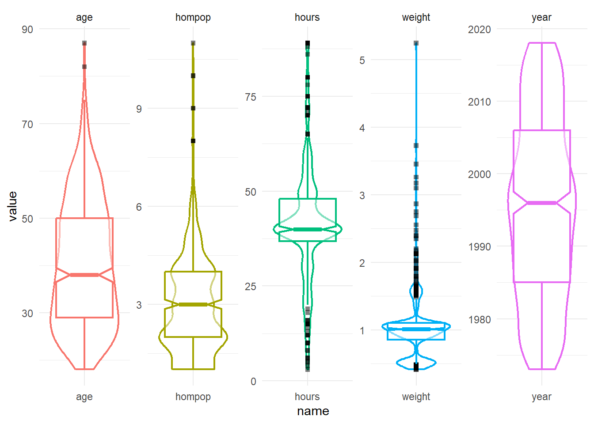
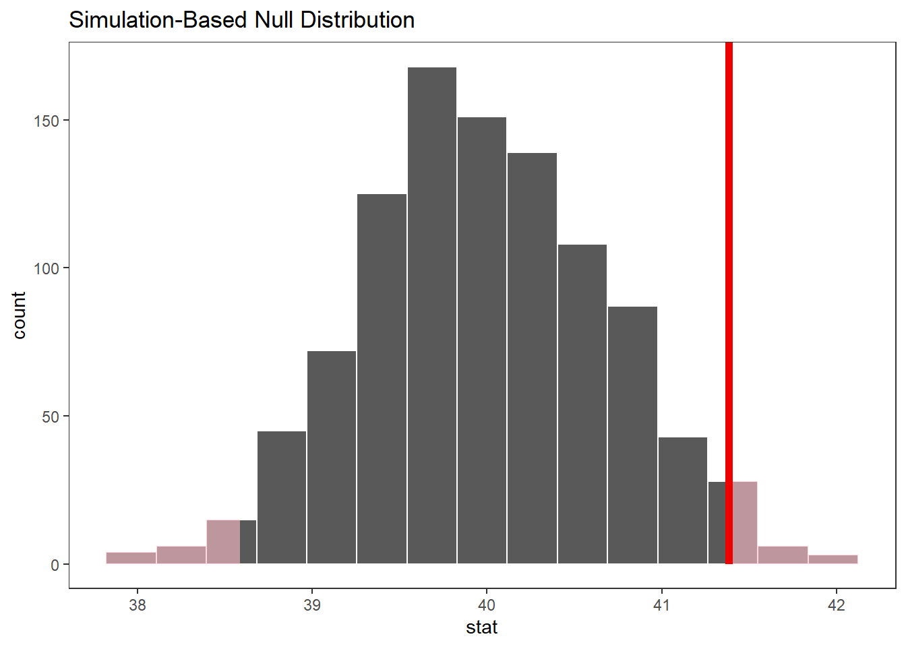
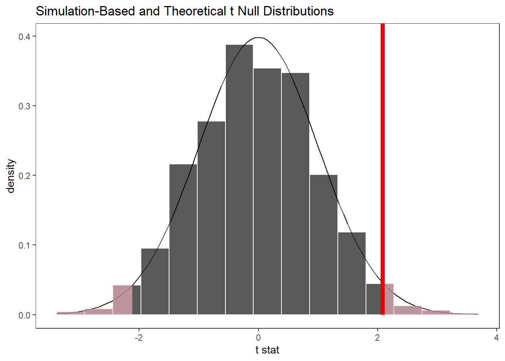
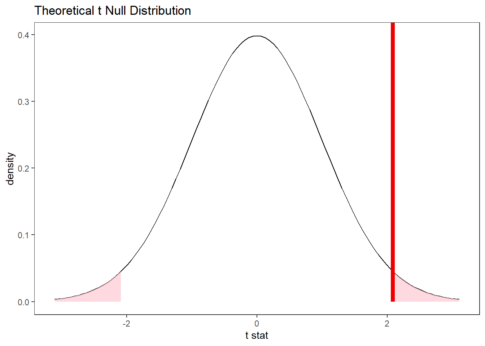

library(tidyverse)
library(infer)
library(gt)
library(flextable)
theme_set(theme_test())Inferência Estatística Organizada: no R
Esse texto tem como objetivo apresentar o pacote infer que tem como objetivo principal a realização de procedimentos de inferência estatística de forma organizada, seguindo a filosofia tidy.
infer
Informações do pacote:
- Título: Tidy Statistical Inference
- Autor principal: Andrew Bray
- Citação: Couch et al., (2021). infer: An R package for tidyverse-friendly statistical inference. Journal of Open Source Software, 6(65), 3661, https://doi.org/10.21105/joss.03661
- Site: https://infer.netlify.app


Conjunto de dados utilizado
as vinhetas do pacote infer utilizam o conjunto de dados gss que corresponde a Subconjunto de dados da Pesquisa Social Geral (GSS)., traduzido literalmente do help(gss): Subset of data from the General Social Survey (GSS).
The General Social Survey is a high-quality survey which gathers data on American society and opinions, conducted since 1972. This data set is a sample of 500 entries from the GSS, spanning years 1973-2018, including demographic markers and some economic variables. Note that this data is included for demonstration only, and should not be assumed to provide accurate estimates relating to the GSS. However, due to the high quality of the GSS, the unweighted data will approximate the weighted data in some analyses.
O General Social Survey é um inquérito de alta qualidade que reúne dados sobre a sociedade e as opiniões americanas, realizado desde 1972. Este conjunto de dados é uma amostra de 500 entradas do GSS, abrangendo os anos 1973-2018, incluindo marcadores demográficos e algumas variáveis económicas. Note-se que estes dados são incluídos apenas para demonstração e não devem ser considerados como fornecendo estimativas precisas relativas ao GSS. Contudo, devido à elevada qualidade do GSS, os dados não ponderados aproximar-se-ão dos dados ponderados em algumas análises.
nomes_traduzidos = c(
'ano', 'idade', 'sexo', 'faculdade','id_partido','dom_pop',
'horas', 'renda', 'classe', 'fam_renda_opn', 'peso'
)glimpse(gss)Rows: 500
Columns: 11
$ year <dbl> 2014, 1994, 1998, 1996, 1994, 1996, 1990, 2016, 2000, 1998, 20…
$ age <dbl> 36, 34, 24, 42, 31, 32, 48, 36, 30, 33, 21, 30, 38, 49, 25, 56…
$ sex <fct> male, female, male, male, male, female, female, female, female…
$ college <fct> degree, no degree, degree, no degree, degree, no degree, no de…
$ partyid <fct> ind, rep, ind, ind, rep, rep, dem, ind, rep, dem, dem, ind, de…
$ hompop <dbl> 3, 4, 1, 4, 2, 4, 2, 1, 5, 2, 4, 3, 4, 4, 2, 2, 3, 2, 1, 2, 5,…
$ hours <dbl> 50, 31, 40, 40, 40, 53, 32, 20, 40, 40, 23, 52, 38, 72, 48, 40…
$ income <ord> $25000 or more, $20000 - 24999, $25000 or more, $25000 or more…
$ class <fct> middle class, working class, working class, working class, mid…
$ finrela <fct> below average, below average, below average, above average, ab…
$ weight <dbl> 0.8960034, 1.0825000, 0.5501000, 1.0864000, 1.0825000, 1.08640…gss %>%
select(where(is.numeric)) %>%
pivot_longer(everything()) %>%
ggplot(aes(x = name, y = value, color = name)) +
#geom_jitter(alpha = 0.6) +
geom_violin(aes(), linewidth =0.8, fill ='#ffffffff') +
geom_boxplot(notch = TRUE, outlier.shape= 15, outlier.color = 'black',
alpha = 0.5, linewidth =0.8) +
facet_wrap(~name, scales = 'free', nrow =1) +
theme_minimal() +
theme(legend.position ='none')
specify()calculate()observe()hyhotesize()generate()
Testes de Hipótese
Uma variável numérica (média)
x_barra <-
gss %>%
observe(response = hours, stat = 'mean')dist_nula <-
gss %>%
specify(response = hours) %>%
hypothesize(null = "point", mu = 40) %>%
generate(reps = 1000) %>%
calculate(stat = "mean")visualize(dist_nula) +
shade_p_value(obs_stat = x_barra, direction = 'two-sided')
dist_nula %>%
get_p_value(obs_stat = x_barra, direction = 'two-sided')# A tibble: 1 × 1
p_value
<dbl>
1 0.04Uma variável numérica (standardized mean t)
t_barra = gss %>%
specify(response = hours) %>%
hypothesise(null = 'point', mu = 40) %>%
calculate(stat = 't')
t_barra <- gss %>%
observe(response = hours, null = "point", mu = 40, stat = "t")
t_barraResponse: hours (numeric)
Null Hypothesis: point
# A tibble: 1 × 1
stat
<dbl>
1 2.09Gerar a distribuição nula:
# gerar a distribuição nula
gss %>%
specify(response = hours) %>%
hypothesise(null = 'point', mu = 40) %>%
generate(reps = 1000) %>%
calculate(stat = 't') %>%
visualize(method = 'both') +
shade_p_value(obs_stat = t_barra, direction = 'two-sided')
Alternativamente, encontrar a distribuição nula usando metodos teóricos com o verbo assume():
gss %>%
specify(response = hours) %>%
assume('t') %>%
visualize() +
shade_p_value(obs_stat = t_barra, direction = 'two-sided')
gss %>%
specify(response = hours) %>%
hypothesise(null = 'point', mu = 40) %>%
generate(reps = 1000) %>%
calculate(stat = 't') %>%
get_p_value(obs_stat = t_barra, direction = "two-sided")# A tibble: 1 × 1
p_value
<dbl>
1 0.04gss %>% t_test(response = hours, mu = 40)# A tibble: 1 × 7
statistic t_df p_value alternative estimate lower_ci upper_ci
<dbl> <dbl> <dbl> <chr> <dbl> <dbl> <dbl>
1 2.09 499 0.0376 two.sided 41.4 40.1 42.7